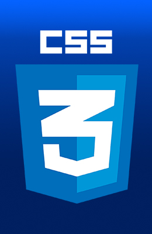
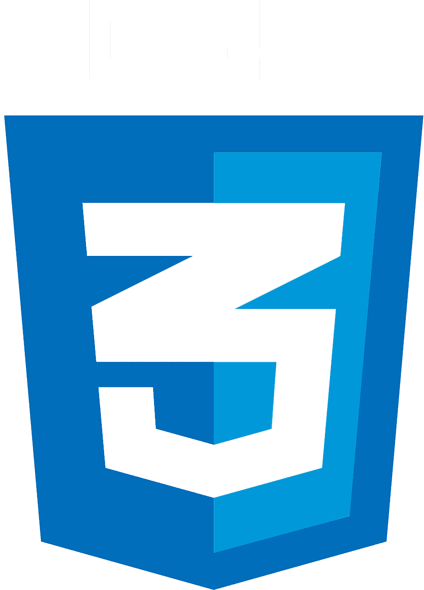

Frontend Developer
Инна Черкашина
г. Новосибирск
Истории о животных
HTML 5
- Навыки построения логики вёрстки страницы по графическому макету и без него.
- При вёрстке использую БЭМ структуру.
- Умею работать с Figma, Photoshop и другими графическими, а так же видео редакторами.
- Умею оформлять текстовые сайты, подключать сторонние шрифты.
- Делаю настройку типографики (переносы слов, неразрывные пробелы, интерлиньяж), обтекаемых элементов (изображений).
JavaScript
- Знаю основы JavaScript (типы данных, операторы, циклы, условные конструкции, функции).
- Знаю структуры данных и их организации (массив, список, стек, дерево и т.д.).
- Умею работать со свойствами и содержимым DOM элементов. Умею создавать, менять и наполнять DOM элементы.
- Начальные знания Webpack, Gulp, React.js, Node.js, Type Script.
- 
CSS
-  Умею делать семантичную, доступную и выразительную вёрстку страниц проектов по макету и без макета. Работаю с Figma, Fotoshop и другими графическими редакторами, делаю экспорт графики из макетов.
- Свободно работаю с Flexbox, слайдерами, попапами, формами.
- Стилизую различные мелкие декоративные и иконочные элементы.
- Люблю использовать несложную анимацию, 3-D эффекты, ховер эффекты и svg-анимацию.
Бани и Дома Новосибирск
Февраль 2022 — по настоящее время
Веб-разработчик
- создание лендингов
- продвижение и корректировка существующего сайта компании
Результаты:
- создала с нуля лендинг для продажи товаров компании ссылка.
В данный момент на него запущена рекламная компания в Яндекс Директ.
Параллельно с работой продолжаю заниматься изучением React для приобретения глубоких и фундаментальных знаний.
ООО "Мета Групп" Новосибирск
Февраль 2021 — октябрь 2021
Frontend-разработчик
- разработка сайтов для заказчиков с нуля
- корректировка кода существующих сайтов
- оптимизация кода
- интеграция сайтов на различные рекламные площадки
Результаты:
- разработала с нуля 3 сайта для торговых компаний (JavaScript, jQuery, HTML, CSS)
Создание мануала по интеграции сайтов с различными рекламными площадками.
Общие сведения обо мне:
с июня 2001 до февраля 2021
Преподаватель фортепиано и концертмейстер
2001 - 2008
Преподавала фортепиано в различных музыкальных школах.
Вела активную концертную деятельность, за что имею многочисленные поощрения и награды.
Декрет
2008 - 2013
Во время декретного отпуска занималась активным пошивом женской и детской одежды. Много раз занимала призовые места на различных конкурсах, посвящённых пошиву верхней одежды. Мои работы публиковались в журналах BURDA moden и DIANA moden.
Личные курсы кройки и шитья
В течение долгого времени самостоятельно изучала нюансы раскроя и моделирования, в итоге разработала собственные курсы по шитью. Имею свою группу в ВК , а так же youtube канал, посвящённый раскрою одежды.
Веб-разработка
К веб-разработке пришла постепенно.
Сначала закончила курсы по smm и таргетированной рекламе, а так же курсы веб-дизайна, чтоб иметь представление, как продвигать и рекламировать свою компанию по шитью одежды, а так же компанию мужа.
Незаметно для себя увлеклась созданием сайтов. Было интересно узнать, как они устроены.
Прошла несколько объёмных курсов.
Тренировалась на компании мужа и его знакомых. Они до сих пор успешно пользуются моими навыками. Затем веб-разработка захватила всё моё время.
Изучением программирования занимаюсь постоянно. Сейчас учу Type Script, React.